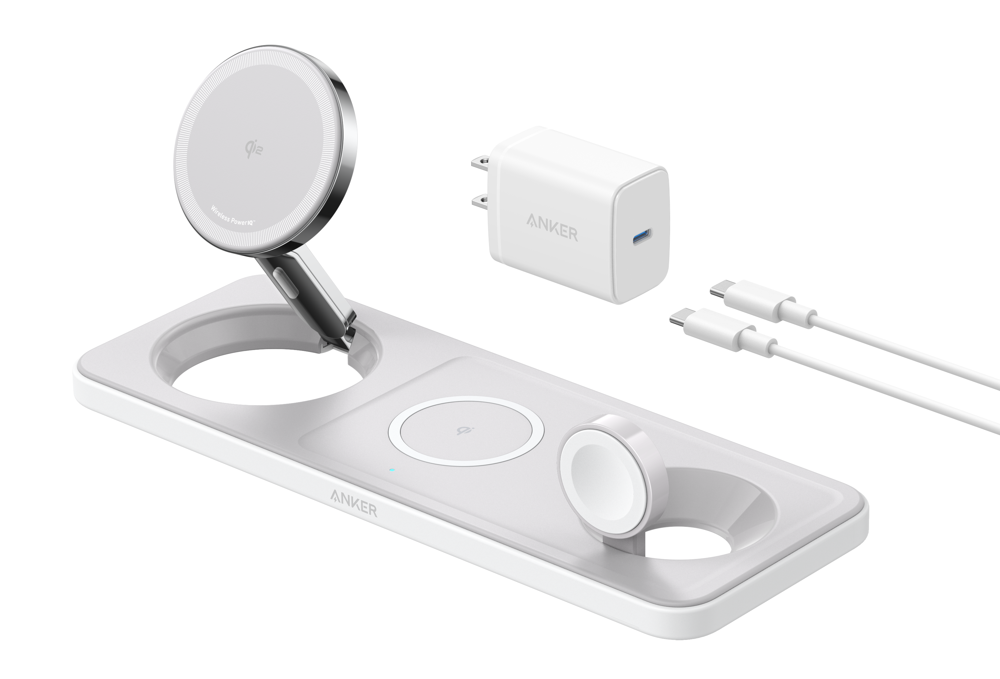
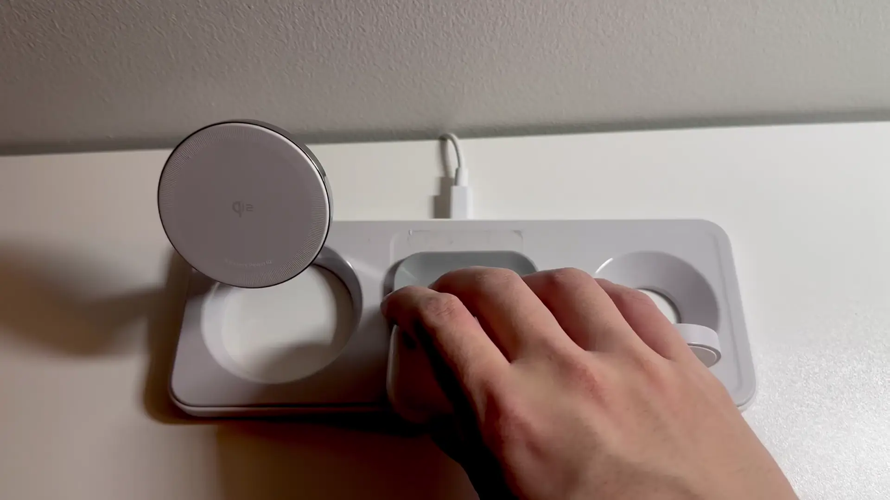
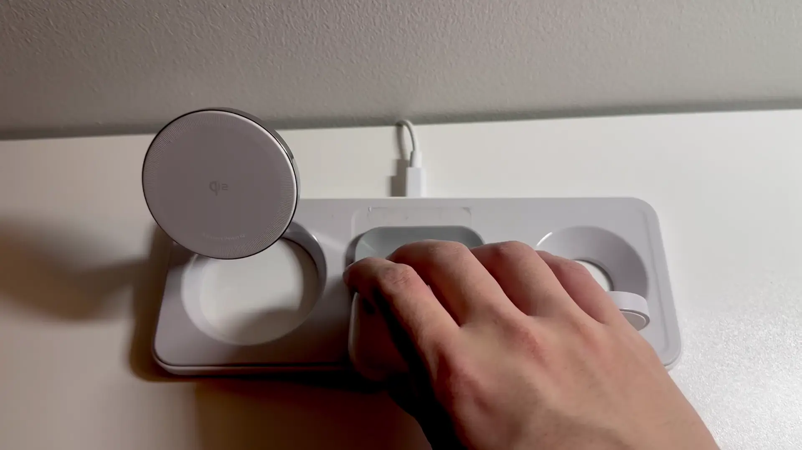

3d printed tray for wireless charger
2024-04-15
1 min
the problem
I recently purchased an "Anker MagGo Wireless Charging Station (3-in-1 Pad)" to reduce the clutter on my desk at home and at work.
It is difficult to align my airpods with the center charger.
- If the airpods do not align, then they will not charge.
- If the airpods are slightly misaligned, then they will cycle between charging and not charging because the circuitry fails to establish a strong charging connection.
- It is not visually pleasing to have misaligned airpods.
the solution
📐 CAD⇗
I made a tray so the airpods would slide into the correct place every time.
 
